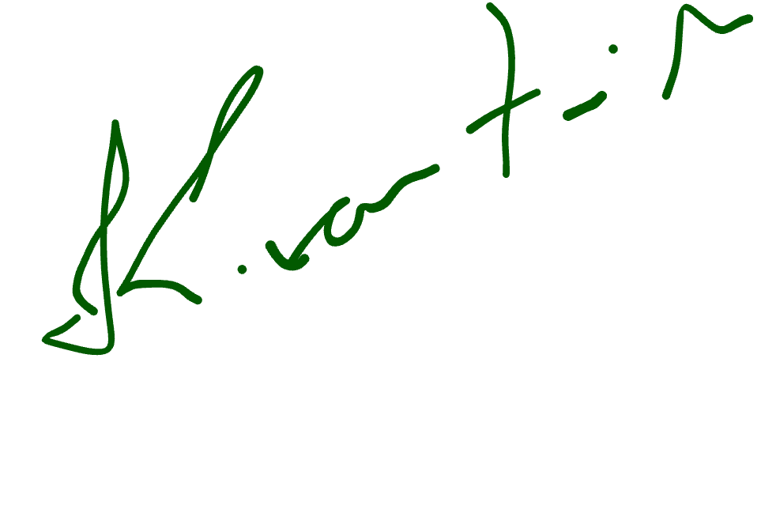

I craft strategic, beautiful and impactful digital experiences that connect brands with people.
VIEW MY WORK →DESIGN
THINKING
MAKES IDEAS
REAL
I'm a web and product designer with a passion for minimal aesthetics, thoughtful user experiences and purposeful design. I partner with brands to create digital solutions that are not only beautiful, but built to perform.

Kartik Barman'">Research, insights & understanding your goals.
Strategy, user flows & information architecture.
Wireframes, UI design & visual exploration.
Collaborate with developers to bring it to life.
Test, optimize & launch with confidence.